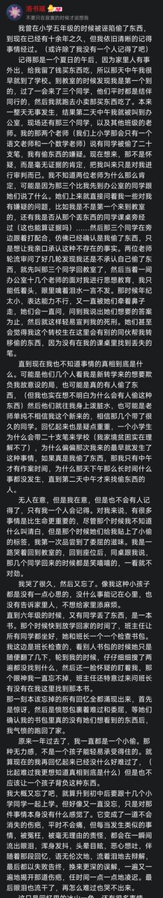

小学毕业后，我考进了全县最好的学校，几千人里面只招一百人，我被当成了神童，没错，我是天才。不过正是学习好这一标签，开启了我长达六年的噩梦。后面关于学习的内容就是大家所熟悉的剧情了。
不过初中最压抑我的并不是学习，而是内心的孤独。初中对我来说太简单了，大部分知识都很好懂。
那时的我表面看起来正常，其实已经变得自卑敏感脆弱，依旧是只跟坐在周围的同学互动。孤独大概是因为没有人能真正走进我的内心，但是那并不是他们的错，是我封闭了自己的内心。自从我有了心事开始，就从未和任何人诉说过心事。这也是最终走向崩溃的一个伏笔。我忘了为何开不了口，大概是不想影响别人的心情，或许是害怕自己又会被伤害到。
在学校的时候还有人可以聊天，一放假回去就是一个人了。当时没有手机，联系不到任何同学，到后面也就慢慢习惯一个人家里蹲了。

不过初中最压抑我的并不是学习，而是内心的孤独。初中对我来说太简单了，大部分知识都很好懂。
那时的我表面看起来正常，其实已经变得自卑敏感脆弱，依旧是只跟坐在周围的同学互动。孤独大概是因为没有人能真正走进我的内心，但是那并不是他们的错，是我封闭了自己的内心。自从我有了心事开始，就从未和任何人诉说过心事。这也是最终走向崩溃的一个伏笔。我忘了为何开不了口，大概是不想影响别人的心情，或许是害怕自己又会被伤害到。
在学校的时候还有人可以聊天，一放假回去就是一个人了。当时没有手机，联系不到任何同学，到后面也就慢慢习惯一个人家里蹲了。

直到五年级的时候，我哥上初中了，要去县里读书，然后我也被接去县里读书，一直寄住在伯伯家里。
正是这两年的时光让我的性格变得郁郁寡言。陌生的环境，寄人篱下，小心翼翼的言行举止，无不潜移默化的影响着自己。 https://t.co/olO6vCc2zf https://t.co/zaZ9pSuEL2
正是这两年的时光让我的性格变得郁郁寡言。陌生的环境，寄人篱下，小心翼翼的言行举止，无不潜移默化的影响着自己。 https://t.co/olO6vCc2zf https://t.co/zaZ9pSuEL2